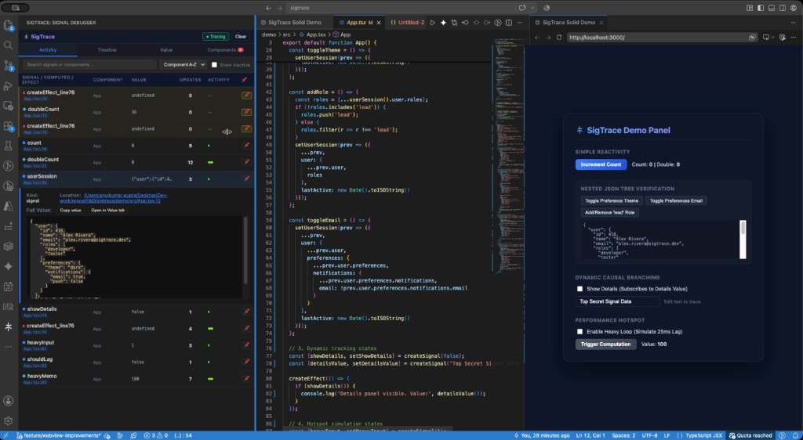
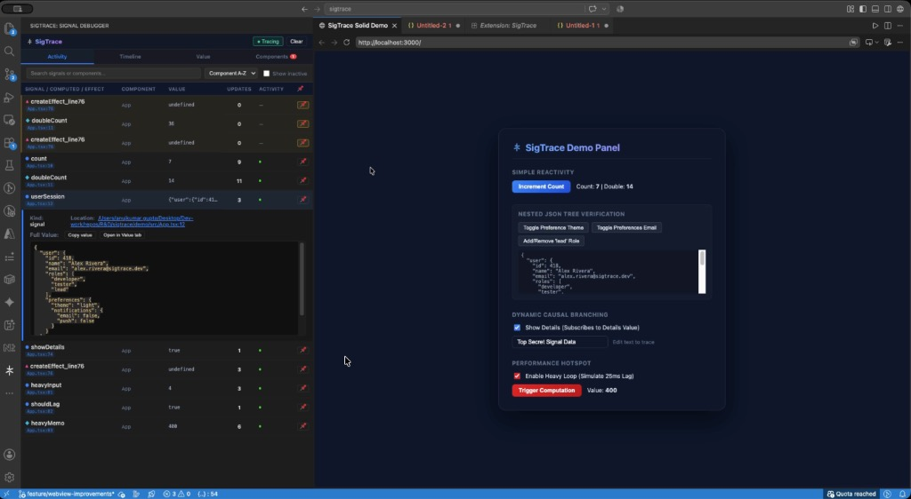
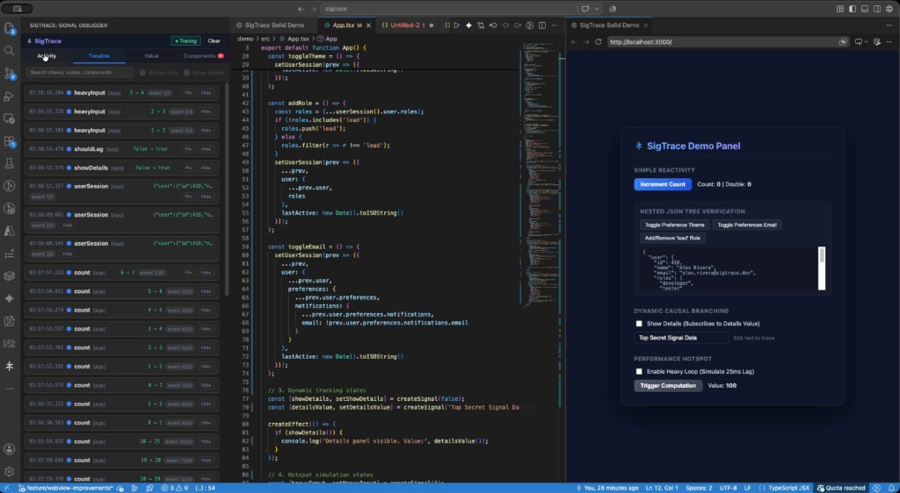
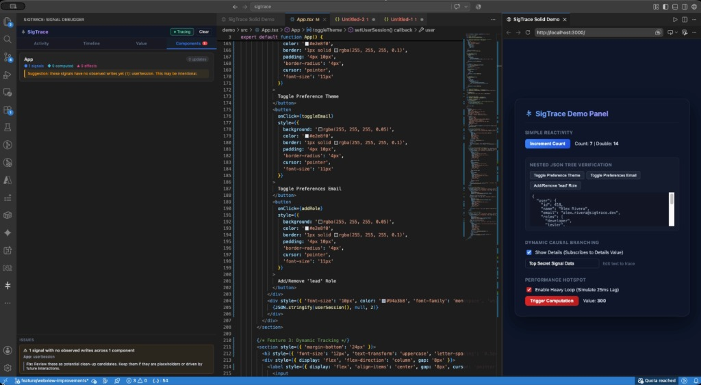

Fine-grained reactivity is the standard state-management system of the modern web. With Angular's native Signals, Vue 3's Refs/Computed APIs, and SolidJS's createSignal, updating the UI has never been faster. However, as reactive graphs grow, developers face a new class of problems: invalidation loops, slow computation updates, and unformatted deep state diagnostics.
To inspect a complex reactive chain, developers typically rely on print-debugging (console.log()) or browser breakpoints. But switching back and forth between your code and the browser's developer tools creates a context-switching tax that slows you down. That is why we built SigTrace—to embed reactivity diagnostics right inside your editor.

1. Analyzing Live Signal Activity with the Collapsible JSON Tree
When you trigger mutations, SigTrace logs every read, write, and effect inside the Activity tab. We recently upgraded the Value Inspector panel to render complex nested objects and arrays as a line-wise collapsible JSON tree. It matches the VS Code layout with vertical guidelines and alternating collapse nodes, meaning you can inspect deep, complex payloads without cluttered strings or horizontal overflow.

Pasting names into your search bar is also easier. A small copy icon (⧉) appears on hover next to every signal name in the list. More importantly, pinned signals survive Clears (using a tombstone strategy) so you can compare states across different application workflows.
2. Visualizing Sequenced Updates in the Causal Timeline
Reactivity cascades happen in milliseconds. If user information gets updated multiple times in a row, typical devtools only show the final state. SigTrace's **Timeline view** renders each event as its own chronological card, showing counts (like event 1/7) so you can step through every single state trigger in order.

Additionally, SigTrace features a **Circular Invalidation Safeguard**. If a reactive loop gets triggered recursively (>25 evaluations per second), SigTrace will automatically intercept the loop to prevent your browser tab from freezing, alerting you to the exact file and line number causing the issue.
3. Auditing Component Health & Memory Leaks
Dangling computations and unused selectors waste memory and CPU cycles. The **Components Tab** automatically groups reactive state by its parent component. It audits your graph to flag "Dead Signals" (variables declared and registered but never read by any computed memo or rendering template) and computation hotspots taking longer than 2ms.

Zero Configuration CLI Startup: To start tracing your application's reactivity, simply prefix your normal startup command with our wrapper. E.g.: npx sigtrace run (such as npm run dev or ng serve).
Conclusion
SigTrace v1.2.0 is out! The layout updates, verifier fixes, and new line-wise JSON trees are available now for both VS Code and WebStorm. Download the extension package directly to start debugging reactivity where you write code.
Check out our GitHub Repository to read the code, contribute features, or report issues!